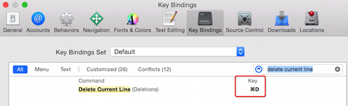
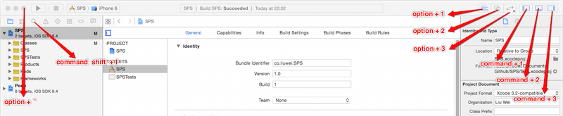

提高IOS开发效率的一些小技巧
一，快捷键
1.添加删除当前行快捷键
sudo vim /Applications/Xcode.app/Contents/Frameworks/IDEKit.framework/Resources/IDETextKeyBindingSet.plist
找到Deletion节点，添加以下代码:
<key>Delete Current Line</key>
<string>deleteToBeginningOfLine:, moveToEndOfLine:, deleteToBeginningOfLine:, deleteBackward:, moveDown:, moveToBeginningOfLine:</string>
依次点击 xcode -> Preferences -> Key Bindings 在输入框中输入delete current line , 在右边的Key一栏中绑定快捷键，这里我喜欢Eclipse的风格command + d

2.修改默认快捷键
平时在开发过程中，我用到最多的快捷键是布局界面的切换和查找，如下：

二，Code Snippets
把一些常用的代码块作为自定义code snippets，这个因人而异。我这里定义了一些常用的注释，GCD，ifelse，switch等。
这里推荐一个插件，ACCodeSnippetRepository
这个是我的snippets repository：https://github.com/liuweicode/snippets
三，xcode插件
Alcatraz：Package manager for Xcode